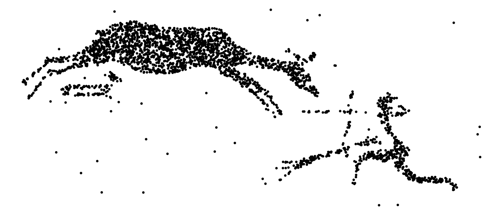
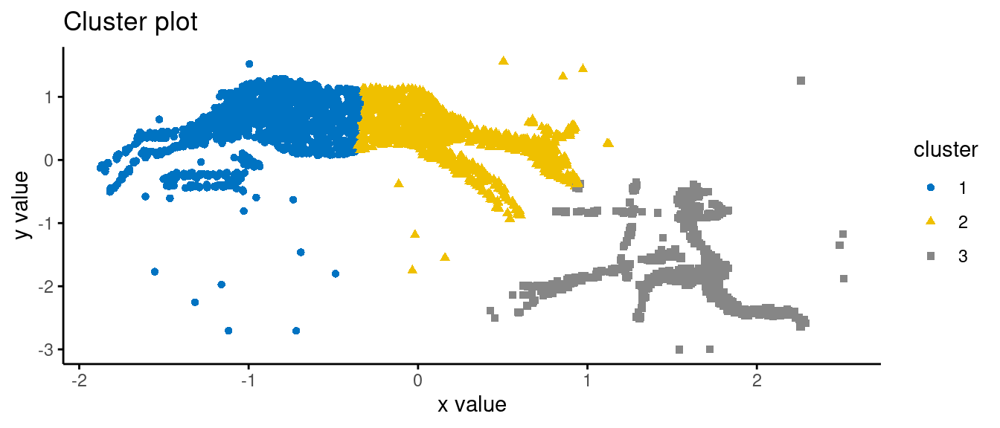
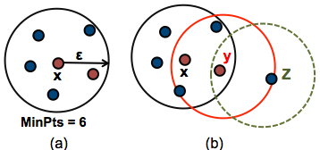
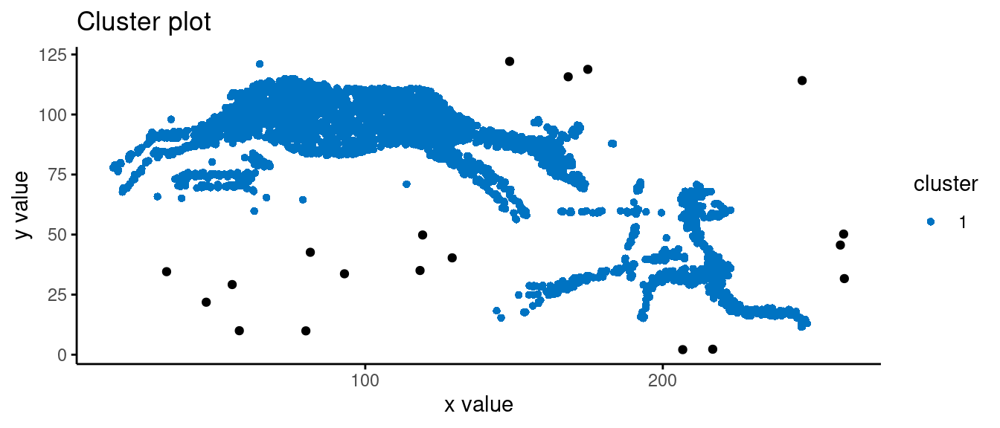
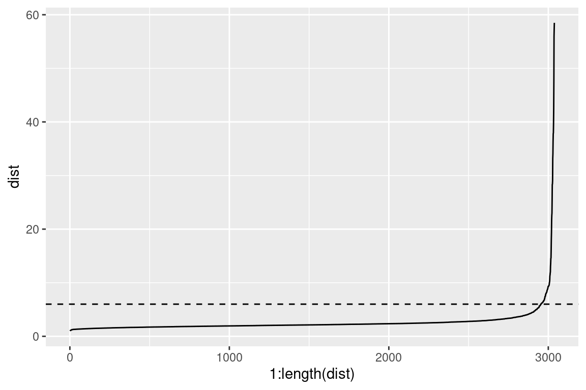
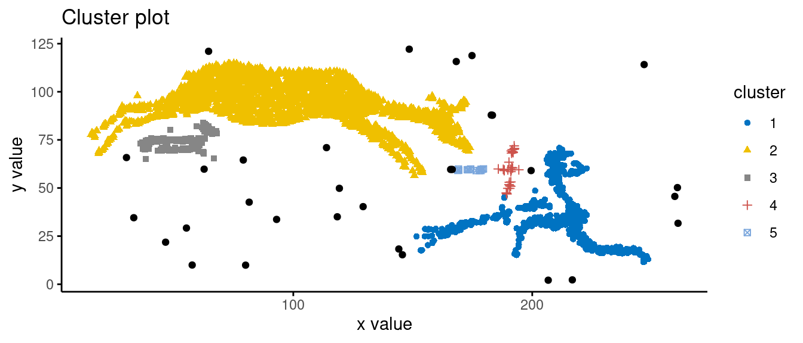

Capítulo 4 Clústers basados en densidades
4.1 Librería dbscan
DBSCAN (Density-Based Spatial Clustering and Application with Noise) es un algoritmo de cluster basado en densidades, que puede ser utilizado para identificar clusters que contengan patrones, ruido y outliers. Mediante la grupación basada en densidades, se localizan áreas de mayor densidad con respecto al resto de los datos. Los puntos que quedan fuera de estas áreas de densidad son considerados ruido o puntos de frontera.
Si quisiéramos enseñar a una máquina a “observar” patrones como los seres humanos lo hacemos, probablemente deberíamos comenzar plantéandonos un método como DBSCAN.
El algoritmo DBSCAN se basa en la noción intuitiva detrás de lo que es cluster y lo que es ruido. Para los puntos que pertenecen a un cluster, hay una “vecindad” de radio dado, tal que esta vecindad contiene un número mínimo de puntos que también pertenecen al mismo cluster.
Por ejemplo, la siguiente imagen puede ser fácilmente segnemtada por un ser humano con una simple pasada. ¿Pudiésemos utilizar análisis cluster para determinar quiénes son los personajes de esta historia?
library(dplyr)
library(ggplot2)
points = read.table(file = "data/arte-rupestre.txt",
header = T)
ggplot(points, aes(x=x, y=y)) +
geom_point(size = 0.5) +
theme_void()
Veamos qué sucede si intentamos particionar estos puntos usando k-means.
library(factoextra)
set.seed(0)
km.res = kmeans(points, 3, nstart = 9)
fviz_cluster(km.res, points, geom = "point",
ellipse = F, show.clust.cent = F,
palette="jco", ggtheme = theme_classic() )
Como podemos observar, k-means no identifica apropiadamente estos clusters con formas arbitrarias, incluso cuando le decimos exactamente cuántos grupos verdaderos hay.
4.1.1 ¿Cómo funciona?
El objetivo de DBSCAN es identificar regiones densas, que pueden ser medidas según el número de objetos cercanos a un punto dado.
DBSCAN requiere dos hiperparámetros importantes,
- epsilon (
eps) Define el radio de la vecindad alrededor de un punto \(x\), comúnmente llamada \(\epsilon-\)vecindad. - minimum points (
minPts) Número mínimo de vecinos en un radioeps.
Esto da lugar a una clasificación en tres tipos de puntos. Dado \(x\) que pertenece al conjunto de datos,
- \(x\) es un punto interior si tiene más de
minPtspuntos en su \(\epsilon-\)vecindad. - \(x\) es un punto frontera si no es interior, pero pertenece a la \(\epsilon-\)vecindad de algún punto interior.
- \(x\) es un outlier si no es punto interior ni frontera.
La siguiente figura muestra los diferentes tipos de puntos que podemos tener. En este ejemplo, \(x\) es un punto interior (porque tiene 6 puntos a distancia menor que eps), \(y\) es un punto frontera (porque pertenece a la \(\epsilon-\)vecindad de \(x\)) y \(z\) es un outlier.

El algoritmo DBSCAN se basa en las siguientes nociones de conectividad entre puntos.
Direct density reachable (\(\rightarrow\)) Decimos que \(B \rightarrow A\) si
- \(A\) pertenece a la \(\epsilon-\)vecindad de \(B\)
- \(B\) es un punto interior
- Density reachable (\(\rightarrow \cdot \rightarrow\)) Decimos que \(B \rightarrow \cdot \rightarrow A\) si existe un conjunto de puntos interiores que lleva de \(B\) a \(A\).
Density connected \(A\) y \(B\) son density connected si existe un punto interior \(C\) tal que \(B \leftarrow \cdot \leftarrow C \rightarrow \cdot \rightarrow A\).
Un cluster basado en densidad se define como un conjunto de puntos density connected. La idea del algoritmo DBSCAN es la siguiente.
- Para un punto inicial \(x_0\) encontrar todos los puntos en su \(\epsilon-\)vecindad. Cada punto con un número de vecinos mayor o igual que
minPtses marcado como interior, de lo contrario es marcado como visitado. - Para cada punto interior, si este no está en ningún cluster, crear un nuevo cluster. Recursivamente, encontrar todos los puntos density connected con él, y asignarlos a su mismo clúster.
- Iterar 1-2 en los puntos restantes no visitados.
- Los puntos que no pertenecen a ningún cluster son marcados como outliers.
Visualización paso a paso: https://www.naftaliharris.com/blog/visualizing-dbscan-clustering/
4.1.2 Ventajas
- A diferencia de k-means, DBSCAN no requiere un número prefijado de clusters.
- DBSCAN puede lidiar con cualquier forma en los clústers, no necesariamente circular.
- DBSCAN identifica los outliers.
4.1.3 Utilización
La función dbscan, del paquete del mismo nombre, es una implementación optimizada del algoritmo DBSCAN.
Para comprobar si el paquete no está instalado e instalarlo, ejecutamos la línea siguiente.
Vamos a aplicar el algoritmo DBSCAN al conjunto de puntos de nuestro ejemplo.
library(dbscan)
db = dbscan(points, eps = 15, minPts = 6)
fviz_cluster(db, data=points, stand = FALSE,
ellipse = FALSE, show.clust.cent = FALSE,
geom = "point",palette = "jco", ggtheme = theme_classic())
Ups! DBSCAN solamente identifica un cluster en este ejemplo. Veamos si podemos encontrar los hiperparámetros eps y minPts óptimos.
4.1.4 Determinando el eps óptimo.
El método para determinar el mejor epsconsiste en, fijado el valor de minPts, calcular la distancia media de cada punto a sus \(k=\)minPts vecinos más cercanos. Luego este promedio para cada punto es mostrado en orden ascendente, y el valor de eps se escoje mirando el primer codo.
En nuestro ejemplo,
dist <- kNNdist(points, k=10)
dist <- sort(dist)
ggplot() +
aes(x = 1:length(dist), y = dist) +
geom_line()+
geom_hline(yintercept = 6, linetype = "dashed")
library(dbscan)
db = dbscan(points, eps = 6, minPts = 10)
fviz_cluster(db, data=points, stand = FALSE,
ellipse = FALSE, show.clust.cent = FALSE,
geom = "point",palette = "jco", ggtheme = theme_classic())